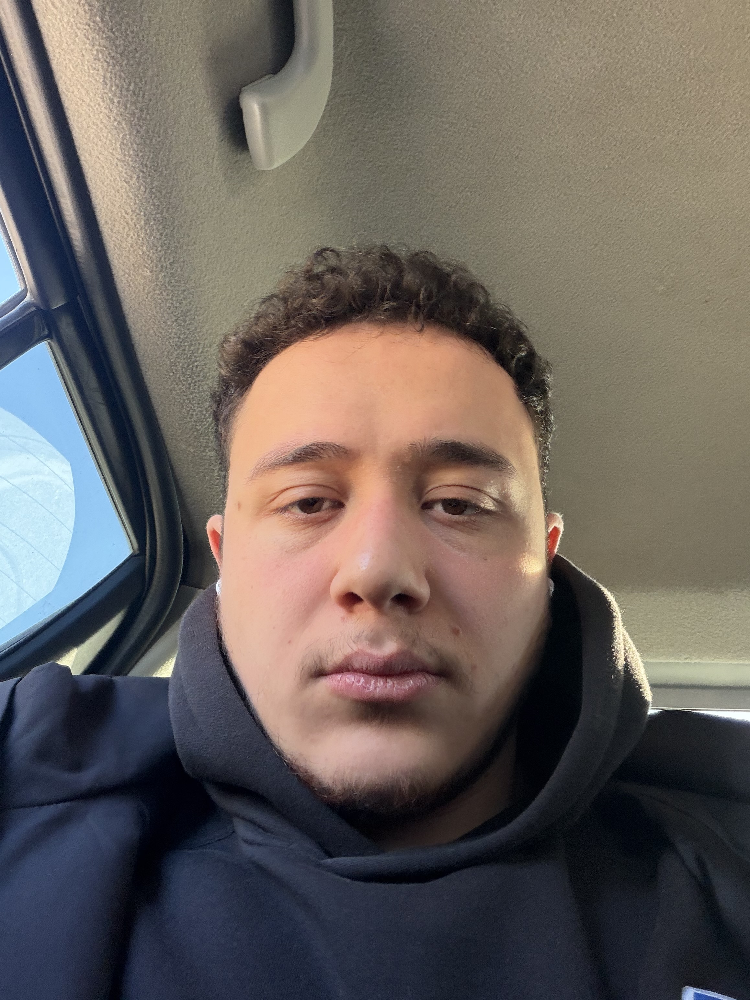

Computer Engineer
Welcome to my personal homepage! Hello and welcome to my personal webpage! I am Berkay Gündoğdu, a 22-year-old senior Computer Engineering student. I have a deep passion for my major and a strong drive to continuously learn and improve my coding skills. Looking ahead, my ultimate career goal is to advance my technical expertise in cybersecurity and become a specialist in this dynamic field.
Motivated and detail-oriented computer engineering candidate with practical industry experience. During my first internship in the IT department at Sanko Hospital, I developed my front-end web development skills, specifically focusing on HTML and JavaScript. Subsequently, during my second internship at Middle East Technical University (ODTÜ), I worked extensively with the Drupal Content Management System. I am committed to continuous learning and applying my technical skills to real-world projects.